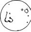

\1\2ğaç\3
Ay nasıl kokar?

Anlaşıldığı kadarıyla barut gibi.
Ay’da yalnızca on iki kişi yürüdü; bunların hepsi de Amerikalıydı. Astronotlar hava geçirmez uzay elbiseleri içinde Ay’ı koklayamıyorlardı, ama Ay’daki toprak yapışkan bir madde olduğundan, Ay yüzeyinden kabine döndüklerinde yanlarında bu tozlardan bol miktarda sürüklüyorlardı.
Astronotlar Ay’daki toprağın kara benzediğini, barut gibi koktuğunu ve tadının çok kötü olmadığını söylediler. Bu toprak büyük ölçüde, Ay’ın yüzeyine çarpan göktaşlarının yol açtığı silikon dioksitten meydana gelmektedir; bunun yanısıra demir, kalsiyum ve magnezyum gibi mineraller de içerir.
NASA, uzay uçuşlarına katılan her bir ekipmanı koklayan küçük bir tim görevlendiriyor. Bunun sebebi, Uluslararası Uzay İstasyonu’ndaki havanın hassas dengesini değiştirebilecek herhangi bir maddenin uzay mekiğine girmesini önlemek.
Ay’ın peynirden oluştuğu fikri muhtemelen 16. yüzyıla dayanıyor. Bu konuya yapılan ilk atıf John Heywood’un Atasözleri (1564) kitabında geçiyor: “Ay, taze peynirden meydana gelir.” Taze peynir tıpkı Ay’ın kraterli yapısı gibi, benekli bir görünüme sahiptir.